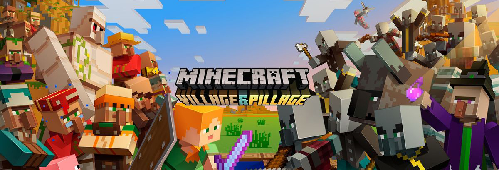

Сложно сказать, знал ли Маркус Перссон о том, что его ждёт в будущем. В 2009 году он был простым программистом, которому в голову пришла идея создать видеоигру, не похожую ни на что. Она должна была быть доступной и понятной, но не нуждаться в инструкциях. Она должна была быть увлекательной, но при этом бесконечной и бессюжетной. И главное – её мир заполняли не программисты или дизайнеры, как он, а сами игроки. То, что могло казаться ловким способом облегчить себе работу, стало секретным ингредиентом успеха. Свобода – это тот элемент, которого до Minecraft в видеоиграх попросту не существовало. Во всяком случае, в таких размахах.

По сути, Перссон (более известный, как просто «Нотч») подарил всему миру виртуальную версию конструктора Lego. Секрет шведского гейм-дизайнера заключается в том, что он намеренно забил на все правила. Именно за умение забыть всё, что было до него, знаменитый разработчик Питер Молиньё рукоплескал своему молодому коллеге. Тот начал с чистого листа. Он изобрёл видеоигры заново.
MinecraftСовременные видеоигры – почти всегда детище огромных студий, которые включают в себя сотни сотрудников. Большие блокбастеры вроде Assassin’s Creed Valhalla разрабатываются одновременно усилиями людей со всего мира: пока одна главная студия трудится над стержнем, работу над ассетами могут выполнять фрилансеры из другой части света. Но в 2009 году Перссон был один.
Было лето, и он решил поэкспериментировать и сделать этакий ремикс двух игр, которые он хорошо знал – Dwarf Fortress и Infiniminer. Работа длилась на протяжении одного уик-энда, по истечении которого был готов грубый набросок будущего хита. Своё детище он выложил на форуме TIGSource. Пройдёт месяц, и он начнёт брать деньги за игру. Она стоила 10 евро.
Это было начало. За два дня было продано 40 цифровых копий. И чем дальше, тем популярнее становилась новинка. Нотч, явно понимающий что-то в маркетинге, намеренно не хотел выпускать завершённый продукт. Вместо этого он постоянно дразнил людей обновлениями, расширяющими возможности цифровых аватаров. «Главное, что люди начинали говорить об игре» – говорил он. Так и есть. Сарафанное радио было лучшей рекламой для подобного проекта.
Вскоре будет сформирована студия Mojang. Её основателями стали сам Нотч и Якоб Порсер – коллега, с которым он работал в King.com. В ноябре 2010 года была запущена бета-версия. 18 ноября 2011 года игра официально была «завершена» и лишилась статуса бетки – это произошло вскоре после релиза мобильных версий для iOS и Android. 12 января 2011 года швед отпраздновал рубеж в один миллион проданных копий. Это стало переломной точкой. Уже в декабре главным дизайнером станет Йенс Бергенстен, а не Нотч. Чем успешнее становилась игра, тем больше разработчиков над ней работало. В 2013 году игра добралась и до PlayStation 3, но это было не главное событие того года, ведь тогда же вышел знаменитый апдейт под названием The Update That Changed The World. Он добавил множество новых биомов и возможностей.
Кульминацией всей саги стала продажа студии и самой Minecraft компании Microsoft за 2,5 млрд долларов в 2014 году. Это была идея самого Перссона, который устал от критики вечно недовольных фанатов. Эта сделка в одночасье превратила Нотча в миллиардера.
Minecraft Story Mode Story Mode подарила нам совершенно другой Minecraft. В этом же году «Майнкрафт» стал активно выходить на всех возможных платформах. Появились версии для Xbox One, PS4 и даже PS Vita. Последние два релиза особо интересны, ведь к тому моменту IP уже принадлежала Microsoft, которая, конечно, нечасто выпускает собственные игры на «вражеской» платформе. В каком-то смысле именно этот тайтл положил начало серьёзным разговорам о кроссплатформенности.
В 2015 году ничего особо интересного не происходило, хоть и состоялся выход версии для Wii U. Тогда же Microsoft начала думать о расширении франшизы, и лицензию на игру по мотивам получила Telltale, известная своими сюжетными проектами. Результат коллаборации – Story Mode, которая, кстати, вышла не только на привычных платформах, но и на стриминговом сервисе Netflix.Minecraft Dungeons В 2020 году состоялся релиз Minecraft Dungeons. Через год состоится релиз ещё двух версий – для Switch и 3DS. С этого момента развитие игры замедлилось. Апдейты продолжали выходить (например, морское обновление в 2018), а игроки со всех платформ получали всё больше возможностей играть вместе. Что забавно, тут «Майнкрафт» стала не только одной из самых влиятельных игр в истории, породившей массу клонов, но и даже вдохновляла совершенно другие жанры. Например, Fortnite и PUBG; если вы не помните, мод на основе «Голодных игр» появился даже раньше.
Сейчас, в 2020 году, франшиза продолжает эволюционировать. Microsoft всячески пытается сделать из неё что-то вроде Mario, который объединяет игры самого разного жанра. И вот этой весной состоялся релиз Minecraft: Dungeons, вдохновлённой Diablo. Правда, особого успеха она не снискала, и была раскритикована за недостаточную амбициозность. А заигрывания с Netflix тоже прошли не впустую: в 2022 на киноэкраны и вовсе выйдет полнометражный фильм по мотивам Minecraft. То ли ещё будет.
Начиная с 22 ноября 2013 года, Mojang AB начала публиковать тестовые сборки Pocket Edition, для получения информации об ошибках в ней, что поможет сделать новую версию игры более стабильной. Они доступны лишь для Android устройств, а для получения возможности скачивать их нужно зайти на сайт. В любой момент можно отключить режим тестера, после чего из Google Play снова будут загружаться лишь стабильные версии игры. Студия Mojang назвала дату окончания поддержки игры Minecraft: Story Mode. Игроки могут скачать эпизоды до 25 июня 2019 года, после чего эта игра будет окончательно удалена из магазинов контента.
Над созданием Minecraft: Story Mode работала студия Telltale, известная по выпуску игр с графикой в духе комиксов и лихо закрученным многослойным сюжетом. Как и в случае с большинством её проектов, игра Minecraft: Story Mode поделена на эпизоды, а развитие истории зависит от того, какие решения принимает игрок.
Игра Minecraft: Story Mode была выпущена в 2015 году. В настоящее время она доступна на Windows, macOS, PlayStation 3, PlayStation 4, PlayStation Vita, Wii U, Nintendo Switch, Xbox 360, Xbox One, Android и iOS. Всего вышло два сезона — 8 эпизодов в первом и 5 во втором. В 2018 году Telltale подписала с Netflix контракт на создание интерактивных шоу для стримингового сервиса. В сентябре 2018 года студия сократила персонал с 250 до 25 человек и объявила о предстоящем закрытии своих игровых проектов.
Порой мы удивляемся тому, как простые на первый взгляд игры могут увлечь. Minecraft одна из таких — лёгкая в освоении, но чрезвычайно комплексная и глубокая, требующая погружения в игровой процесс. Она является одним из законодателей жанра sandbox («песочница»), и это не случайность: Minecraft безгранична в своих возможностях. Кому-то придётся по вкусу отлично работающая механика выживания, другим — строительство, ограниченное лишь воображением игрока. В ней каждый найдёт себе занятие.
Однако выдающийся геймплей — не единственная причина успеха Minecraft. Свою роль сыграло и огромное существующее по сей день сообщество, а также то влияние, которое игра смогла оказать на индустрию. За первые два года своего существования Minecraft приобрела статус культурного феномена. Разберёмся, как это произошло, какой путь прошёл Minecraft и что ждёт его дальше.
Создавая миры Вы появились в незнакомом мире, который полностью состоит из кубических блоков. В голове возникает первый и вполне закономерный вопрос: «А что здесь нужно делать?» Не остаётся ничего, кроме как побегать вокруг, сломать несколько блоков травы и попробовать забить руками пасущихся на лугу коров. Местные коровы бегают на удивление быстро — на их убийство приходится тратить немало времени. К моменту, когда живодёрство надоест, солнце уже, вероятнее всего, начнёт садиться, а очки голода окажутся близки к нулю. Лежащая в инвентаре сырая говядина ситуацию не спасёт.
Закаты в Minecraft красивые — но во время них начинают появляться враждебные мобы Итак, солнце зашло: вокруг темно, а за спиной слышен рык зомби и звук клацающих костей. Внезапно в вас летят несколько стрел — здоровье уменьшается на три четверти. Добивает вас нечто с характерным неприятным шипением, будто догорает фитиль динамита. Взрыв — и на экране надпись «You died!». Явно не понимая, что происходит, вы переводите курсор на кнопку «Respawn». Minecraft — простая игра, но она никогда не станет разбрасываться подсказками. Через час, после нескольких прочитанных гайдов, вы уже успеете сделать себе какой-никакой набор каменных инструментов, скромное убежище со всем необходимым — дверью, кроватью, печкой и сундуком, — и верстак, без которого не получится скрафтить 80% инвентаря.
Ваше первое жильё, скорее всего, будет выглядеть вот так
 Ещё через полчаса, когда печки окажутся переполнены переплавляемым железом, вы наконец-то выйдете на поверхность
после нескольких дней пребывания в шахте — и захотите сделать ферму. Сначала пшеничную, чтобы крафтить хлеб. Потом
вы отыщите тех коров, которые не успели пострадать от ваших рук, и оградите их забором, чтобы наладить добычу мяса.
Жизнь налаживается.
Ещё через полчаса, когда печки окажутся переполнены переплавляемым железом, вы наконец-то выйдете на поверхность
после нескольких дней пребывания в шахте — и захотите сделать ферму. Сначала пшеничную, чтобы крафтить хлеб. Потом
вы отыщите тех коров, которые не успели пострадать от ваших рук, и оградите их забором, чтобы наладить добычу мяса.
Жизнь налаживается.
Примерно на этом моменте пути игроков расходятся. Кто-то загорается идеей отстроить себе кирпичный дом, потому что коробка из древесины выглядит до неприличия просто; кто-то уйдёт исследовать дальние горизонты. А кто-то не успокоится, пока не найдет своё первое золото или алмазы. Сложно представить, что когда-то давно в Minecraft всего этого не было. Игра пополнялась контентом постепенно: но даже при половине реализованных функций и идей она умела затягивать.